|
4.1 Adding Users
|
The first step you want to do with every JMeter Test Plan is to add a
Thread Group element. The Thread Group tells
JMeter the number of users you want to simulate, how often the users should send
requests, and how many requests they should send. Go ahead and add the ThreadGroup element by first selecting the Test Plan,
clicking your right mouse button to get the Add menu, and then select
Add → ThreadGroup. You should now see the Thread Group element under Test Plan. If you do not
see the element, then "expand" the Test Plan tree by clicking on the
Test Plan element. Next, you need to modify the default properties. Select the Thread Group element
in the tree, if you have not already selected it. You should now see the Thread
Group Control Panel in the right section of the JMeter window (see Figure 4.1
below) 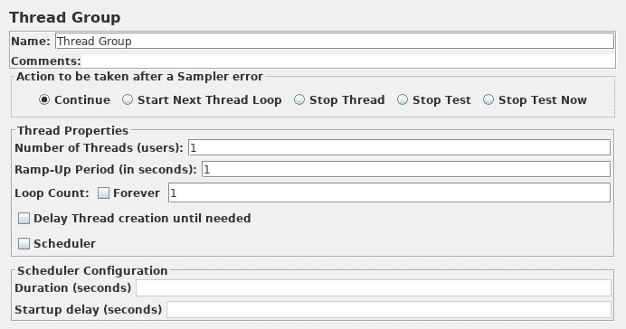
Figure 4.1. Thread Group with Default Values |
Start by providing a more descriptive name for our Thread Group. In the name
field, enter JMeter Users. Next, increase the number of users (called threads) to 5. In the next field, the Ramp-Up Period, leave the default value of 1
seconds. This property tells JMeter how long to delay between starting each
user. For example, if you enter a Ramp-Up Period of 5 seconds, JMeter will
finish starting all of your users by the end of the 5 seconds. So, if we have
5 users and a 5 second Ramp-Up Period, then the delay between starting users
would be 1 second (5 users / 5 seconds = 1 user per second). If you set the
value to 0, then JMeter will immediately start all of your users. Finally enter a value of 2 in
the Loop Count field. This property tells JMeter how many times to repeat your
test. If you enter a loop count value of 1, then JMeter will run your test only
once. To have JMeter repeatedly run your Test Plan, select the Forever
checkbox.
| In most applications, you have to manually accept
changes you make in a Control Panel. However, in JMeter, the Control Panel
automatically accepts your changes as you make them. If you change the
name of an element, the tree will be updated with the new text after you
leave the Control Panel (for example, when selecting another tree element). |
See Figure 4.2 for the completed JMeter Users Thread Group. 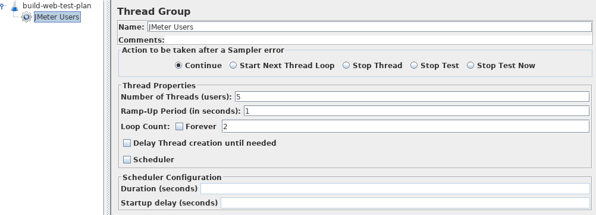
Figure 4.2. JMeter Users Thread Group |
|
|
|
4.2 Adding Default HTTP Request Properties
|
Now that we have defined our users, it is time to define the tasks that they
will be performing. In this section, you will specify the default settings
for your HTTP requests. And then, in section 4.3, you will add HTTP Request
elements which use some of the default settings you specified here. Begin by selecting the JMeter Users (Thread Group) element. Click your right mouse button
to get the Add menu, and then select Add → Config Element → HTTP Request
Defaults. Then select this new element to view its Control Panel (see Figure 4.3).
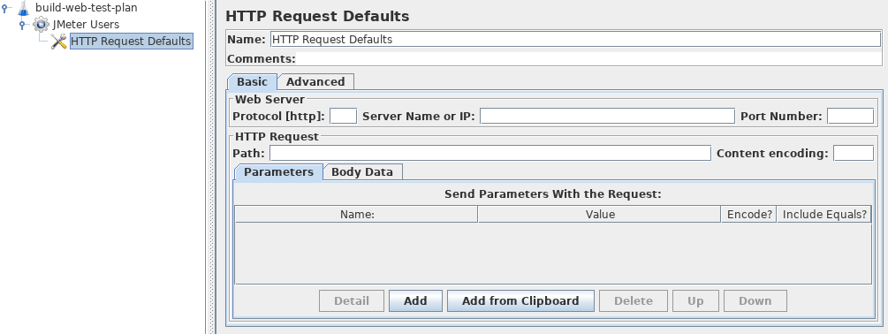
Figure 4.3. HTTP Request Defaults |
Like most JMeter elements, the HTTP Request Defaults Control
Panel has a name field that you can modify. In this example, leave this field with
the default value. Skip to the next field, which is the Web Server's Server Name/IP. For the
Test Plan that you are building, all HTTP requests will be sent to the same
Web server, jmeter.apache.org. Enter this domain name into the field.
This is the only field that we will specify a default, so leave the remaining
fields with their default values.
| The HTTP Request Defaults element does not tell JMeter
to send an HTTP request. It simply defines the default values that the
HTTP Request elements use. |
See Figure 4.4 for the completed HTTP Request Defaults element 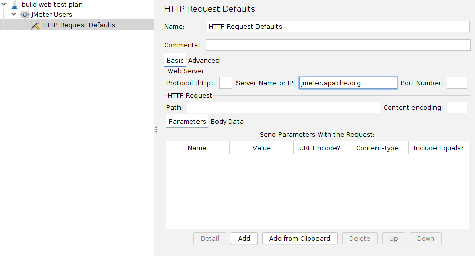
Figure 4.4. HTTP Defaults for our Test Plan |
|
|
|
4.3 Adding Cookie Support
|
Nearly all web testing should use cookie support, unless your application
specifically doesn't use cookies. To add cookie support, simply add an
HTTP Cookie Manager to each Thread
Group in your test plan. This will ensure that each thread gets its own
cookies, but shared across all HTTP Request objects. 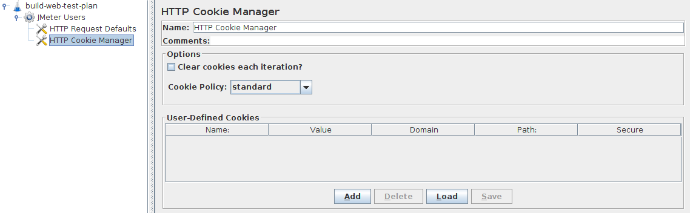
Figure 4.5. HTTP Cookie Manager |
To add the HTTP Cookie Manager, simply select the
Thread Group, and choose Add →
Config Element → HTTP
Cookie Manager, either from the Edit Menu, or from the right-click pop-up menu.
|
|
|
4.4 Adding HTTP Requests
|
In our Test Plan, we need to make two HTTP requests. The first one is for the
JMeter home page (http://jmeter.apache.org/), and the second one is for the
Changes page (http://jmeter.apache.org/changes.html).
| JMeter sends requests in the order that they appear in the tree. |
Start by adding the first HTTP Request
to the JMeter Users element (Add → Sampler → HTTP Request).
Then, select the HTTP Request element in the tree and edit the following properties
(see Figure 4.6):
- Change the Name field to "Home Page".
- Set the Path field to "/". Remember that you do not have to set the Server
Name field because you already specified this value in the HTTP Request Defaults
element.
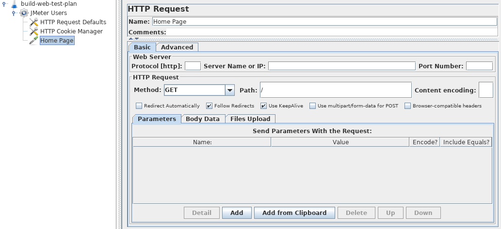
Figure 4.6. HTTP Request for JMeter Home Page |
Next, add the second HTTP Request and edit the following properties (see
Figure 4.7:
- Change the Name field to "Changes".
- Set the Path field to "/changes.html".
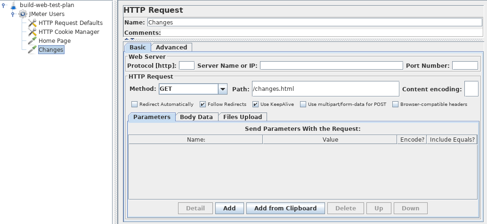
Figure 4.7. HTTP Request for JMeter Changes Page |
|
|
|
4.6 Logging in to a web-site
|
It's not the case here, but some web-sites require you to login before permitting you to perform certain actions.
In a web-browser, the login will be shown as a form for the user name and password,
and a button to submit the form.
The button generates a POST request, passing the values of the form items as parameters.
To do this in JMeter, add an HTTP Request, and set the method to POST.
You'll need to know the names of the fields used by the form, and the target page.
These can be found out by inspecting the code of the login page.
[If this is difficult to do, you can use the JMeter Proxy Recorder to record the login sequence.]
Set the path to the target of the submit button.
Click the Add button twice and enter the username and password details.
Sometimes the login form contains additional hidden fields.
These will need to be added as well.
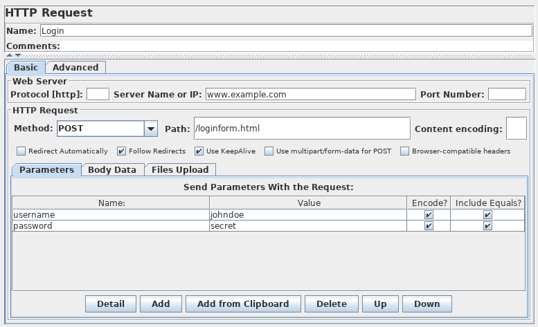
Figure 4.8. Sample HTTP login request |
|
|
|
4.7 choose the same user or different users
|
When creating a Test Plan, on each Thread Group iteration, we can choose to simulate the same user running multiple iterations,
or different users running one iteration.
You can configure this behaviour on Thread Group element, and have HTTP Cache Manager, HTTP Cookie Manager, HTTP Authorization Manager
controlled by this setting.
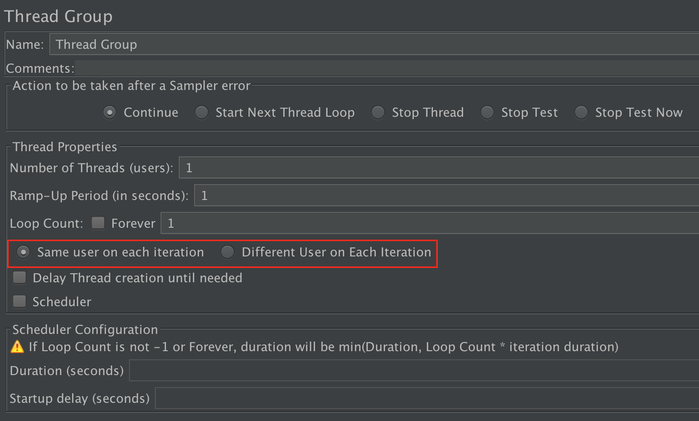
Figure 4.9. Choose the same user or different users |
You can choose to clear the cookies/cache content/authorization in the CookieManager/CacheManager/Authorization Manager,
or choose to be controlled by the Thread Group.
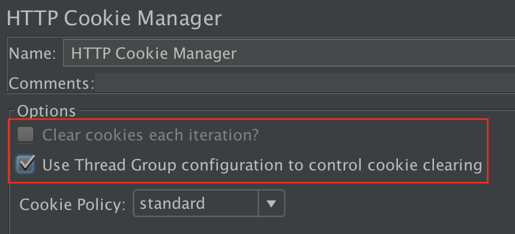
Figure 4.10. Use Thread Group to control CookieManager |
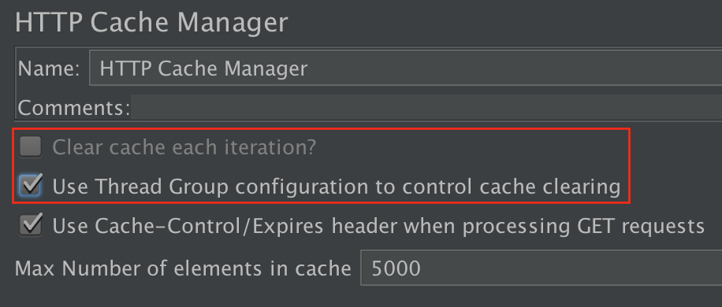
Figure 4.11. Use Thread Group to control CacheManager |
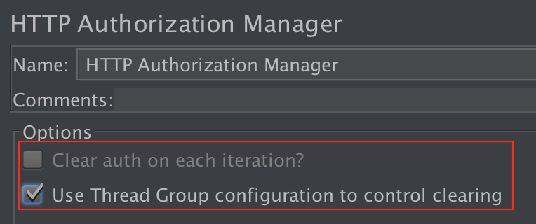
Figure 4.12. Use Thread Group to control Authorization Manager |
|
|
|